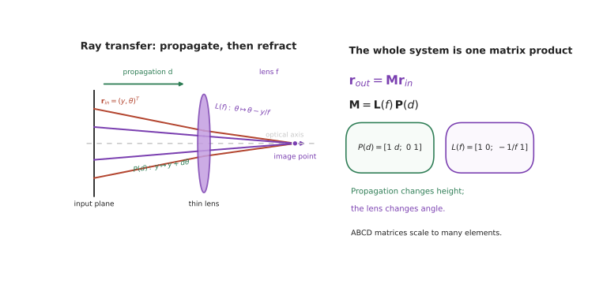

本页目录
光学 I · 几何光学与成像
层次：本科核心。 几何光学把光当作直线传播的射线，完全不涉及光的本质。这个粗糙的模型，却足以设计出人类几乎全部的光学系统——从眼镜到显微镜到光刻机物镜。本页讲清它的规则、它的强大之处，以及它在哪里必然失效。
学习层：先追一条光线，再决定系统是否成像
1. 具体谜题：三片元件后，光线会落在哪里？
一束近轴光线从 \(y=4\,\mathrm{mm}\)、\(\theta=0\) 出发，先传播 \(d=20\,\mathrm{mm}\)，通过焦距 \(f=50\,\mathrm{mm}\) 的薄透镜，再传播 \(d=50\,\mathrm{mm}\)。请先不要套“看起来应该在焦点”的直觉：它最后的高度与角度是多少？把 \(y=4\) 的光线换成 \(y=2\)，它们是否在同一个位置相交？这就是“理想成像”能否成立的最小检验。
2. 先预测：大 NA 是不是只带来好处？
打开实验前写下三项预测：① 上述系统的矩阵乘积会把哪一个输入量改成零；② 把孔径直径 \(D\) 加倍而焦距不变，\(F/\#\) 与近轴 \(\mathrm{NA}\) 如何变，进光量约变为几倍；③ 显微镜把总放大率从 \(100\times\) 提到 \(400\times\) 时，若物镜 NA 不变，分辨率会不会同步改善。改变间隔和焦距后，再检查你预测的是“像的位置”还是“像的清晰度”。
3. 最小 mental model：高度—角度账本
只保留光线状态 \(\mathbf r=(y,\theta)^T\)。自由传播把角度保持不变、把高度增加 \(d\theta\)；薄透镜把高度保持不变、把角度减去 \(y/f\)。每个元件都是一个线性算子，系统按光的先后顺序右乘：后发生的元件写在左边。这个模型不追踪波的相位，却足以给出近轴焦距、主平面和像的位置。
4. 正式机制：矩阵连乘与成像不变量
若 \(M=\begin{bmatrix}A&B\\C&D\end{bmatrix}\)，平行入射光束在传播到输出面后是否汇聚，取决于 \(A\)：\(A=0\) 时输出高度不再依赖输入高度，所有近轴平行光线在该面交于一点。物面与像面是否共轭则取决于 \(B\)：\(B=0\) 时输出高度不依赖物点发射角。矩阵的行列式满足 \(\det P=\det L=1\)，因此理想一阶系统的 \(\det M=AD-BC=1\)；它保留了光学相空间的面积账本，而不是任意地压缩高度和角度。
系统指标也要分账：\(F/\#=f/D\) 控制通光与衍射权衡，\(\mathrm{NA}=n\sin\theta\) 控制收集角与分辨率。增大 NA 可能增加光子并改善分辨率，却同时缩小景深、放大像差压力；放大率本身不是新的信息。
5. 静态实验：逐步走完 ABCD 乘积
无 JavaScript 时的静态读法：用 \(f=50\,\mathrm{mm}\)、\(d_1=20\,\mathrm{mm}\)、\(d_2=50\,\mathrm{mm}\)，按“传播 → 透镜 → 传播”计算
因此 \((4,0)\) 与 \((2,0)\) 分别给出 \((0,-0.08)\) 与 \((0,-0.04)\)；不同高度的平行光线在输出面相交。脚本可先让你预测 \(A\) 是否为零，再逐元件推进光线、切换焦距/间隔，并显示 \(\det M\)、\(F/\#\) 与近轴轨迹；所有数值都是固定模型，不调用网络。
6. 反例与边界：矩阵很强，但它不是完整光学
- 近轴假设是前提。 当角度大到 \(\sin\theta\approx\theta\) 不再成立，球差和彗差让同一物点不再映成一个点；\(\det M=1\) 也不能证明真实像面无像差。
- \(A=0\) 或 \(B=0\) 都不是分辨率证书。 它们只说明一阶几何的聚焦或共轭关系；有限孔径会产生艾里斑，波动光学才给出 \(0.61\lambda/\mathrm{NA}\) 的分辨率界。
- 放大率不是信息。 物镜 NA 不变时，额外目镜放大只会放大已有的模糊；光阑、渐晕和未采集的角度仍在限制系统。
- 状态约定不能混用。 若用 \(n\theta\)、弧度或不同的符号约定，矩阵元素会改变；必须在整个连乘中保持同一坐标定义。
7. 迁移题：从一张镜头图到可验收的设计
给定相机镜头的焦距、孔径和传感器位置，先用 ABCD 找一阶焦面，再列出哪些指标必须交给波动模型：衍射斑、MTF、偏振与相干性。若显微镜的总放大率翻倍但物镜 NA 不变，你会保留哪一项作为验收指标，如何用一组不同高度的光线和一个点扩散函数分别验证它？

一、基本定律与费马原理
反射：\(\theta_i = \theta_r\)。折射（Snell 定律）：
全内反射：从光密到光疏介质，入射角超过临界角 \(\theta_c = \arcsin(n_2/n_1)\) 时全部反射。这是光纤（第十二页）与许多棱镜器件的物理基础。
费马原理（更深刻的表述）：光沿光程取极值（通常是极小）的路径传播。
它的价值在于统一性：反射、折射、以及折射率渐变介质中的弯曲光线（梯度折射率透镜、大气蜃景、光纤的渐变折射率芯）全都由它导出。而且它与力学的最小作用量原理形式相同——🔗 物理站讲过这个类比，它不是巧合，而是波动方程短波长极限的普遍结构。
二、成像方程与放大率
理想成像：物点发出的所有光线，经系统后交于同一像点。
薄透镜公式（牛顿形式与高斯形式）：
焦距由几何与折射率决定（磨镜者方程）：
注意 \(f\) 依赖 \(n\)，而 \(n\) 依赖波长 → 色差（第二页）。这是折射系统无法回避的固有问题，也是反射式望远镜在大口径领域胜出的原因之一。
三个必须掌握的系统参数：
| 参数 | 定义 | 决定什么 |
|---|---|---|
| 焦距 \(f\) | — | 放大倍率、视场 |
| F 数 \(F/\# = f/D\) | 焦距/通光孔径 | 进光量（\(\propto 1/(F/\#)^2\)）与衍射极限 |
| 数值孔径 \(\mathrm{NA}=n\sin\theta\) | 收集角 | 分辨率（第四页）与景深 |
F 数与 NA 的关系（近轴）：\(F/\# \approx 1/(2\mathrm{NA})\)。
这两个量是光学系统的核心指标：大 NA = 高分辨率 + 大进光量，但同时 = 小景深 + 大像差 + 难加工。这是光学设计的第一权衡，贯穿显微镜、光刻机（🔗 微电子站第十二页：浸没式提高 NA）、相机镜头。
三、光阑、光瞳与渐晕
孔径光阑决定进光量与 NA；视场光阑决定视场范围。
入瞳/出瞳是孔径光阑经前后系统所成的像——它们是系统间对接的接口。目视仪器的出瞳必须与人眼瞳孔匹配（望远镜出瞳大于眼瞳则浪费光，小则视场变暗）；光刻与显微系统的光瞳面是做照明整形与相位调控的关键位置（🔗 微电子站的离轴照明、光瞳整形）。
渐晕（vignetting）：边缘视场的光束被镜筒或后续镜片部分遮挡 → 边缘变暗。相机镜头的边缘失光大多源于此，收小光圈可改善。
四、矩阵光学：把系统变成乘法
近轴条件下，光线用 \((y, \theta)\) 表示，每个元件是一个 \(2\times2\) 矩阵：
整个系统 = 矩阵连乘。这使复杂系统的近轴性质（焦距、主平面、成像位置）可以机械地算出。
它还有一个重要的延伸：同一套 ABCD 矩阵可以用于高斯光束的传播（第七页）——只需把实的光线参数换成复的光束参数 \(q\)。这是几何光学与波动光学之间一座意外优雅的桥。
五、典型系统
- 放大镜/目镜：物在焦点内，成虚像；
- 显微镜：物镜成放大实像，目镜再放大。总放大率 = 物镜 × 目镜，但分辨率由物镜 NA 决定（第四页）——"空放大"（放大倍数超过分辨率所能支持的）没有意义，这是显微镜使用中最常见的误解；
- 望远镜：\(M = f_{\text{物}}/f_{\text{目}}\)。开普勒式（两凸透镜，成倒像，可加分划板）用于天文与瞄准；伽利略式（凹目镜，正像，短）用于观剧镜；
- 摄影镜头：多组多片，为在大视场、大孔径下同时校正多种像差（第二页）；
- 投影与照明系统：科勒照明——把光源成像到光瞳面而非物面，从而获得均匀照明。这个思想在显微镜、光刻机中都是标准配置。
六、几何光学在哪里失效
必须清楚它的边界：
- 无法给出分辨率极限。几何光学预言理想系统可以把点成为点——实际上衍射使它成为一个有限大小的斑（第四页艾里斑）。任何"分辨率"的讨论都必须用波动光学；
- 无法处理干涉与偏振（第三、五页）；
- 在尺度接近波长时完全失效——微纳结构、超表面（第十八页）必须用电磁理论；
- 对相干光的传播描述不准——激光束需要高斯光束理论（第七页）。
恰当的工作方式：用几何光学做系统布局与像差设计，用波动光学评估最终性能（分辨率、MTF、衍射效率）。 现代光学设计软件正是这样：光线追迹为主，衍射计算为辅。
七、要点
- 费马原理统一了反射、折射与渐变介质中的传播，并与力学最小作用量同构；
- NA 与 F 数是核心指标：大 NA 带来高分辨率与大进光量，代价是小景深、大像差、难加工；
- 光瞳是系统对接与调控的关键面；
- 矩阵光学把近轴系统变成矩阵连乘，且可延伸到高斯光束；
- 显微镜的分辨率由物镜 NA 决定，放大倍数无法超越它；
- 几何光学给不出分辨率、干涉与偏振——这些必须交给波动光学。
下一页：理想成像只存在于近轴。真实系统的光线不会精确交于一点——像差是光学设计的主要战场，而校正像差的历史，几乎就是光学工业的历史。